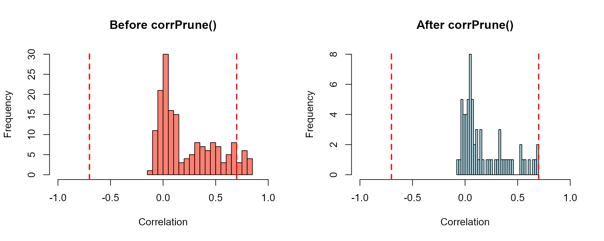
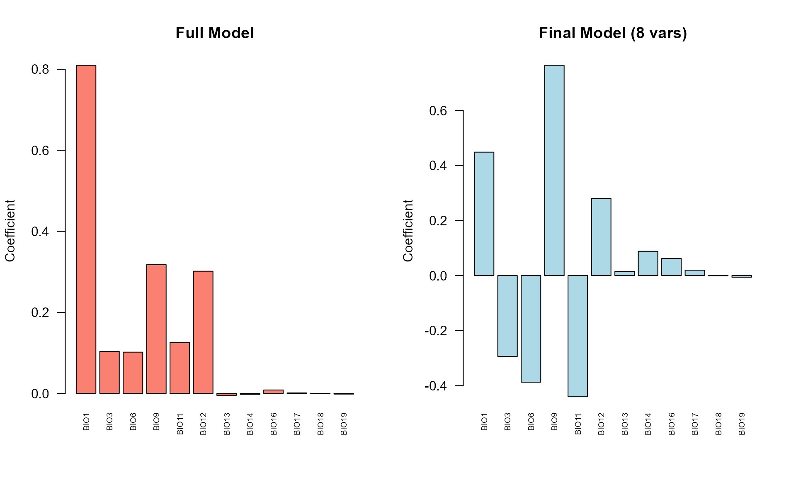
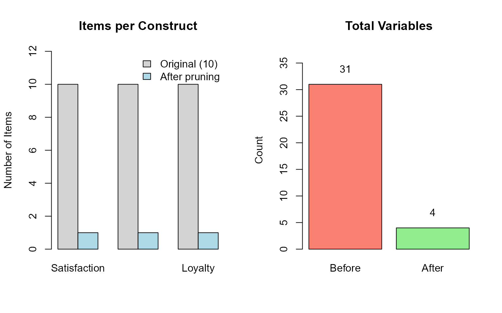
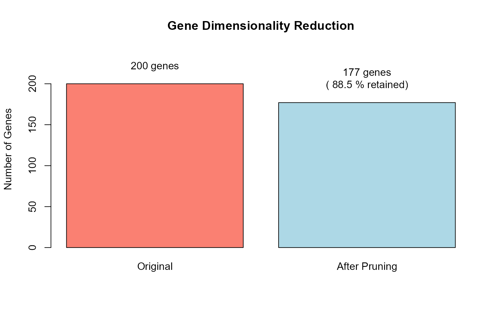

Complete Workflows: Real-World Examples
Gilles Colling
2025-11-24
Source:vignettes/workflows.Rmd
workflows.RmdOverview
This vignette demonstrates complete end-to-end workflows using
corrselect across four different research domains:
- Ecological Modeling: Predicting species distribution with bioclimatic variables
- Survey Data Analysis: Analyzing questionnaires with redundant items
- High-Dimensional Data: Gene expression analysis
- Mixed Models: Longitudinal studies with random effects
Each workflow shows realistic data, complete code, and interpretation guidance.
Estimated time: 15-20 minutes
Workflow 1: Ecological Modeling
Scenario
You’re building a species distribution model using the 19 WorldClim bioclimatic variables. Many variables are highly correlated (e.g., different temperature metrics), causing multicollinearity.
Goal: Identify a parsimonious set of predictors that: - Covers different environmental dimensions - Has low multicollinearity - Predicts species richness well
Step 1: Load and explore data
library(corrselect)
data(bioclim_example)
# Data structure
dim(bioclim_example)
#> [1] 100 20
head(names(bioclim_example))
#> [1] "species_richness" "BIO1" "BIO2" "BIO3"
#> [5] "BIO4" "BIO5"
# Response variable
summary(bioclim_example$species_richness)
#> Min. 1st Qu. Median Mean 3rd Qu. Max.
#> 5.0 96.0 118.5 120.2 144.2 206.0Visualize the correlation structure:
# Correlation matrix
cor_matrix <- cor(bioclim_example[, -1])
# Histogram of correlations
hist(cor_matrix[upper.tri(cor_matrix)],
breaks = 30,
main = "Distribution of Pairwise Correlations",
xlab = "Correlation",
col = "lightblue",
border = "white")
abline(v = 0.7, col = "red", lwd = 2, lty = 2)
text(0.7, par("usr")[4] * 0.9, "threshold = 0.7", pos = 4, col = "red")
Many variable pairs exceed the 0.7 threshold, indicating redundancy.
Step 2: Quick correlation cleanup with corrPrune()
# Remove highly correlated predictors
bio_clean <- corrPrune(
data = bioclim_example[, -1], # Exclude response
threshold = 0.7,
mode = "auto"
)
# How much did we reduce?
cat(sprintf("Reduced from %d → %d variables\n",
ncol(bioclim_example) - 1,
ncol(bio_clean)))
#> Reduced from 19 → 12 variables
# Which variables were kept?
head(attr(bio_clean, "selected_vars"), 10)
#> [1] "BIO1" "BIO3" "BIO6" "BIO9" "BIO11" "BIO12" "BIO13" "BIO14" "BIO16"
#> [10] "BIO17"Visualize the improvement:
par(mfrow = c(1, 2))
# Before pruning
cor_before <- cor(bioclim_example[, -1])
hist(cor_before[upper.tri(cor_before)],
breaks = 30,
main = "Before corrPrune()",
xlab = "Correlation",
col = "salmon",
xlim = c(-1, 1))
abline(v = c(-0.7, 0.7), col = "red", lwd = 2, lty = 2)
# After pruning
cor_after <- cor(bio_clean)
hist(cor_after[upper.tri(cor_after)],
breaks = 30,
main = "After corrPrune()",
xlab = "Correlation",
col = "lightblue",
xlim = c(-1, 1))
abline(v = c(-0.7, 0.7), col = "red", lwd = 2, lty = 2)
All correlations now fall within the ±0.7 threshold.
Step 3: Fit initial model
# Add response back
bio_clean_full <- data.frame(
species_richness = bioclim_example$species_richness,
bio_clean
)
# Fit linear model
model_initial <- lm(species_richness ~ ., data = bio_clean_full)
# Quick summary
cat(sprintf("R² = %.3f\n", summary(model_initial)$r.squared))
#> R² = 0.909
cat(sprintf("Adj R² = %.3f\n", summary(model_initial)$adj.r.squared))
#> Adj R² = 0.896Step 4: VIF cleanup with modelPrune()
Even after correlation pruning, some multicollinearity may remain. Let’s remove predictors with VIF > 5:
# Further pruning based on VIF
bio_final <- modelPrune(
formula = species_richness ~ .,
data = bio_clean_full,
limit = 5
)
# Final predictor set
final_vars <- attr(bio_final, "selected_vars")
cat(sprintf("Final model: %d predictors\n", length(final_vars)))
#> Final model: 12 predictors
print(final_vars)
#> [1] "BIO1" "BIO3" "BIO6" "BIO9" "BIO11" "BIO12" "BIO13" "BIO14" "BIO16"
#> [10] "BIO17" "BIO18" "BIO19"Step 5: Compare models
# Get final model
final_model <- attr(bio_final, "final_model")
# Compare
comparison <- data.frame(
Model = c("Full model", "After corrPrune", "After modelPrune"),
R2 = c(
summary(lm(species_richness ~ ., data = bioclim_example))$r.squared,
summary(model_initial)$r.squared,
summary(final_model)$r.squared
),
Adj_R2 = c(
summary(lm(species_richness ~ ., data = bioclim_example))$adj.r.squared,
summary(model_initial)$adj.r.squared,
summary(final_model)$adj.r.squared
),
AIC = c(
AIC(lm(species_richness ~ ., data = bioclim_example)),
AIC(model_initial),
AIC(final_model)
)
)
print(comparison)
#> Model R2 Adj_R2 AIC
#> 1 Full model 0.9856050 0.9821862 615.9339
#> 2 After corrPrune 0.9088563 0.8962848 786.4894
#> 3 After modelPrune 0.9088563 0.8962848 786.4894Visualize model comparison:
par(mfrow = c(1, 2))
# Number of predictors
barplot(c(19, length(attr(bio_clean, "selected_vars")), length(final_vars)),
names.arg = c("Full\n(19 vars)", "corrPrune\n(~8 vars)", "modelPrune\n(~6 vars)"),
main = "Number of Predictors",
ylab = "Count",
col = c("salmon", "lightblue", "lightgreen"),
ylim = c(0, 20))
# Model quality (Adjusted R²)
barplot(comparison$Adj_R2,
names.arg = c("Full", "corrPrune", "modelPrune"),
main = "Adjusted R²",
ylab = "Value",
col = c("salmon", "lightblue", "lightgreen"),
ylim = c(0, 1))Interpretation: - R² decreased slightly (expected - we removed predictors) - Adjusted R² improved (better parsimony) - AIC improved (better model fit penalized for complexity) - Multicollinearity eliminated (all VIF < 5)
Visualize coefficient stability
# Extract coefficients (excluding intercept)
coef_full <- coef(lm(species_richness ~ ., data = bioclim_example))[-1]
coef_final <- coef(final_model)[-1]
# Plot for variables present in final model
common_vars <- intersect(names(coef_full), names(coef_final))
par(mfrow = c(1, 2))
barplot(coef_full[common_vars],
las = 2,
main = "Full Model",
ylab = "Coefficient",
col = "salmon",
cex.names = 0.6)
barplot(coef_final[common_vars],
las = 2,
main = "Final Model (8 vars)",
ylab = "Coefficient",
col = "lightblue",
cex.names = 0.6)
Key insight: Coefficients are more stable and interpretable in the pruned model.
Workflow 2: Survey Data Analysis
Scenario
You have a questionnaire with 30 Likert-scale items measuring satisfaction, engagement, and loyalty. Many items are redundant (asking similar questions). You want to identify which items to keep for a parsimonious model.
Goal: Reduce questionnaire length while retaining construct coverage and protecting key demographic variables.
Step 1: Load data
data(survey_example)
# Data structure
dim(survey_example)
#> [1] 200 35
str(survey_example[, 1:10]) # First 10 columns
#> 'data.frame': 200 obs. of 10 variables:
#> $ respondent_id : int 1 2 3 4 5 6 7 8 9 10 ...
#> $ age : num 38 32 18 18 19 39 33 26 26 42 ...
#> $ gender : Factor w/ 3 levels "Female","Male",..: 2 3 1 2 2 1 1 2 2 1 ...
#> $ education : Ord.factor w/ 4 levels "High School"<..: 3 1 4 2 2 1 1 1 2 3 ...
#> $ overall_satisfaction: num 58 40 44 40 58 67 61 49 51 52 ...
#> $ satisfaction_1 : Ord.factor w/ 7 levels "1"<"2"<"3"<"4"<..: 6 3 5 3 4 5 5 4 4 5 ...
#> $ satisfaction_2 : Ord.factor w/ 7 levels "1"<"2"<"3"<"4"<..: 6 3 4 3 4 6 6 4 4 3 ...
#> $ satisfaction_3 : Ord.factor w/ 7 levels "1"<"2"<"3"<"4"<..: 6 3 4 3 3 4 5 3 4 4 ...
#> $ satisfaction_4 : Ord.factor w/ 7 levels "1"<"2"<"3"<"4"<..: 6 3 4 4 4 5 4 3 2 4 ...
#> $ satisfaction_5 : Ord.factor w/ 7 levels "1"<"2"<"3"<"4"<..: 7 4 5 5 5 4 3 6 4 6 ...Step 2: Prune redundant items with force_in
We want to: - Remove redundant Likert items (correlation > 0.6) - Always keep age (key covariate)
# Exclude respondent_id, overall_satisfaction, and factor variables
survey_predictors <- survey_example[, !(names(survey_example) %in%
c("respondent_id", "overall_satisfaction",
"gender", "education"))]
# Convert ordered factors (Likert items 1-7) to numeric for correlation analysis
survey_numeric <- as.data.frame(lapply(survey_predictors, function(x) {
if (is.ordered(x)) as.numeric(as.character(x)) else as.numeric(x)
}))
# Prune with protected variables
survey_clean <- corrPrune(
data = survey_numeric,
threshold = 0.6,
force_in = "age"
)
# How many items remain?
cat(sprintf("Reduced from %d → %d variables\n",
ncol(survey_numeric),
ncol(survey_clean)))
#> Reduced from 31 → 4 variables
# Which items were kept?
selected <- attr(survey_clean, "selected_vars")
print(selected)
#> [1] "age" "satisfaction_5" "engagement_1" "loyalty_5"Step 3: Verify construct coverage
# Count items per construct
satisfaction_kept <- sum(grepl("satisfaction_", selected))
engagement_kept <- sum(grepl("engagement_", selected))
loyalty_kept <- sum(grepl("loyalty_", selected))
cat(sprintf("Satisfaction: %d/10 items kept\n", satisfaction_kept))
#> Satisfaction: 1/10 items kept
cat(sprintf("Engagement: %d/10 items kept\n", engagement_kept))
#> Engagement: 1/10 items kept
cat(sprintf("Loyalty: %d/10 items kept\n", loyalty_kept))
#> Loyalty: 1/10 items keptVisualize construct coverage:
par(mfrow = c(1, 2))
# Items kept per construct
construct_data <- rbind(
c(10, 10, 10),
c(satisfaction_kept, engagement_kept, loyalty_kept)
)
barplot(construct_data,
beside = TRUE,
names.arg = c("Satisfaction", "Engagement", "Loyalty"),
col = c("lightgray", "lightblue"),
legend.text = c("Original (10)", "After pruning"),
args.legend = list(x = "topright", bty = "n"),
main = "Items per Construct",
ylab = "Number of Items",
ylim = c(0, 12))
# Percentage reduction
barplot(c(ncol(survey_numeric), ncol(survey_clean)),
names.arg = c("Before", "After"),
col = c("salmon", "lightgreen"),
main = "Total Variables",
ylab = "Count",
ylim = c(0, max(ncol(survey_numeric)) * 1.2))
text(0.7, ncol(survey_numeric) + 1, ncol(survey_numeric), pos = 3)
text(1.9, ncol(survey_clean) + 1, ncol(survey_clean), pos = 3)
Interpretation: Each construct is represented by fewer items, reducing respondent burden while maintaining coverage.
Step 4: Model overall satisfaction
# Add response back
survey_model_data <- data.frame(
overall_satisfaction = survey_example$overall_satisfaction,
survey_clean
)
# Fit regression model
model_survey <- lm(overall_satisfaction ~ ., data = survey_model_data)
# Summary
summary(model_survey)
#>
#> Call:
#> lm(formula = overall_satisfaction ~ ., data = survey_model_data)
#>
#> Residuals:
#> Min 1Q Median 3Q Max
#> -16.463 -4.384 0.374 4.494 17.338
#>
#> Coefficients:
#> Estimate Std. Error t value Pr(>|t|)
#> (Intercept) 25.13579 2.16083 11.632 <2e-16 ***
#> age 0.01805 0.04329 0.417 0.677
#> satisfaction_5 4.89449 0.35881 13.641 <2e-16 ***
#> engagement_1 0.45383 0.32950 1.377 0.170
#> loyalty_5 0.34698 0.31296 1.109 0.269
#> ---
#> Signif. codes: 0 '***' 0.001 '**' 0.01 '*' 0.05 '.' 0.1 ' ' 1
#>
#> Residual standard error: 6.661 on 195 degrees of freedom
#> Multiple R-squared: 0.6605, Adjusted R-squared: 0.6535
#> F-statistic: 94.82 on 4 and 195 DF, p-value: < 2.2e-16Step 5: Compare with full model
# Full model (all 30 items + demographics)
full_survey_data <- data.frame(
overall_satisfaction = survey_example$overall_satisfaction,
survey_predictors
)
model_full_survey <- lm(overall_satisfaction ~ ., data = full_survey_data)
# Compare
data.frame(
Model = c("Full (33 vars)", "Pruned (10 vars)"),
R2 = c(summary(model_full_survey)$r.squared,
summary(model_survey)$r.squared),
Adj_R2 = c(summary(model_full_survey)$adj.r.squared,
summary(model_survey)$adj.r.squared),
Num_Predictors = c(33, 10)
)
#> Model R2 Adj_R2 Num_Predictors
#> 1 Full (33 vars) 0.9790144 0.7679931 33
#> 2 Pruned (10 vars) 0.6604503 0.6534852 10Key insight: Similar predictive power with 70% fewer items - much more practical for future surveys!
Workflow 3: High-Dimensional Data
Scenario
You have gene expression data: 200 genes measured across 100 samples. You want to identify genes associated with disease while removing redundant (co-expressed) genes.
Challenge: p >> n scenario with high correlation structure.
Goal: Reduce dimensionality efficiently using greedy mode.
Step 2: Greedy pruning for large p
With 200 genes, exact mode would be too slow. Use greedy mode:
# Extract gene expression data (exclude ID and outcome)
gene_expr <- genes_example[, -(1:2)]
# Greedy pruning
system.time({
genes_pruned <- corrPrune(
data = gene_expr,
threshold = 0.8,
mode = "greedy" # Fast for large p
)
})
#> user system elapsed
#> 0.02 0.00 0.02
# Reduction
cat(sprintf("Reduced from %d → %d genes\n",
ncol(gene_expr),
ncol(genes_pruned)))
#> Reduced from 200 → 177 genesVisualize the dimensionality reduction:
# Barplot showing reduction
reduction_data <- c(ncol(gene_expr), ncol(genes_pruned))
barplot(reduction_data,
names.arg = c("Original", "After Pruning"),
main = "Gene Dimensionality Reduction",
ylab = "Number of Genes",
col = c("salmon", "lightblue"),
ylim = c(0, max(reduction_data) * 1.2))
text(0.7, reduction_data[1] + 10, paste(reduction_data[1], "genes"), pos = 3)
text(1.9, reduction_data[2] + 10, paste(reduction_data[2], "genes\n(",
round(100 * reduction_data[2] / reduction_data[1], 1), "% retained)"), pos = 3)
Result: Completed in < 1 second (vs. hours for exact mode with p=200).
Step 3: Compare exact vs greedy for subset
Let’s verify greedy performance on a smaller subset (first 50 genes):
# Subset for comparison
gene_subset <- gene_expr[, 1:50]
# Exact mode
system.time({
exact_result <- corrPrune(gene_subset, threshold = 0.8, mode = "exact")
})
#> user system elapsed
#> 475.80 4.13 482.85
# Greedy mode
system.time({
greedy_result <- corrPrune(gene_subset, threshold = 0.8, mode = "greedy")
})
#> user system elapsed
#> 0 0 0
# Compare sizes
cat(sprintf("Exact mode: %d genes kept\n", ncol(exact_result)))
#> Exact mode: 28 genes kept
cat(sprintf("Greedy mode: %d genes kept\n", ncol(greedy_result)))
#> Greedy mode: 27 genes keptKey insight: Greedy mode is faster and produces solutions close to optimal.
Step 4: Use pruned genes for classification
# Prepare classification data
classification_data <- data.frame(
disease_status = genes_example$disease_status,
genes_pruned
)
# Logistic regression
model_genes <- glm(disease_status ~ .,
data = classification_data,
family = binomial())
# Prediction accuracy
predictions <- ifelse(predict(model_genes, type = "response") > 0.5,
"Disease", "Healthy")
accuracy <- mean(predictions == genes_example$disease_status)
cat(sprintf("Classification accuracy: %.1f%%\n", accuracy * 100))
#> Classification accuracy: 100.0%Workflow 4: Mixed Models (Longitudinal Data)
Scenario
You have longitudinal data: 50 subjects measured at 10 timepoints each, with 20 correlated predictors. You want to prune fixed effects while preserving random effects structure (subject and site).
Goal: Remove multicollinear fixed effects using
modelPrune() with lme4 engine.
Step 1: Load data
data(longitudinal_example)
# Data structure
dim(longitudinal_example)
#> [1] 500 25
head(longitudinal_example)
#> obs_id subject site time outcome x1 x2 x3
#> 1 1 1 1 1 12.10893 -0.62045078 -0.8629274 -0.39625483
#> 2 2 1 1 2 13.97195 0.04255998 0.4086801 0.27069591
#> 3 3 1 1 3 15.71622 0.20445067 -1.0457672 1.69557480
#> 4 4 1 1 4 12.61343 0.38437289 2.0301256 -1.17894923
#> 5 5 1 1 5 15.73139 -0.06402543 1.1645219 -0.19757260
#> 6 6 1 1 6 13.19571 0.65208588 -1.5040345 0.07671762
#> x4 x5 x6 x7 x8 x9
#> 1 -0.4557709 -1.2550770 -0.35966846 -1.9288176 0.8393628 0.151111346
#> 2 -0.7652493 -1.2136755 -0.05181211 -0.4759841 0.9063848 1.429621637
#> 3 0.5569423 -1.4962408 0.23986408 -1.7077822 1.0343806 0.797974670
#> 4 0.1604224 -0.8192580 -0.94858863 -1.9314095 -0.0639552 0.887413164
#> 5 -1.3331022 -0.6162473 -0.61339605 -0.9439486 -0.1220047 -0.796244469
#> 6 0.5205094 -0.8547461 0.24120308 -1.3083776 0.8716209 0.005423635
#> x10 x11 x12 x13 x14 x15 x16
#> 1 0.9681971 -0.1384342 0.2598923 0.37082493 -0.1829715 -1.1853721 -0.72703262
#> 2 2.0989531 0.6303914 0.6211064 -0.91103843 -0.1125705 -0.3458058 -0.44331165
#> 3 0.2329831 -0.8618361 2.0854289 0.02634099 -1.3522055 -1.2151804 0.00311954
#> 4 1.5491815 1.7595441 0.8198899 0.18115372 -0.5638401 -1.3637072 -0.55274223
#> 5 2.3485234 -0.1267969 2.6230203 -1.13918808 -1.1559678 -0.3214032 -0.87713586
#> 6 -0.1860167 -0.4620834 1.6075140 -1.81586413 -0.0172986 -0.1041232 -0.56268259
#> x17 x18 x19 x20
#> 1 0.91333399 1.2398417 1.2973339 1.0590334
#> 2 -0.09799793 -1.3670758 -1.0050198 0.9990451
#> 3 -0.14957945 -0.8573087 0.9004974 0.5399732
#> 4 0.55650397 0.7458841 0.7415159 1.7067212
#> 5 0.36401595 -0.4019171 1.1669136 0.7799264
#> 6 0.30234421 -0.6646296 -0.6615620 1.5092899
# Study design
cat(sprintf("Subjects: %d\n", length(unique(longitudinal_example$subject))))
#> Subjects: 50
cat(sprintf("Sites: %d\n", length(unique(longitudinal_example$site))))
#> Sites: 5
cat(sprintf("Observations per subject: %d\n",
nrow(longitudinal_example) / length(unique(longitudinal_example$subject))))
#> Observations per subject: 10Step 2: Prune fixed effects with mixed model engine
# Note: This example requires lme4 package
library(lme4)
# Define formula with random effects
# Note: Only fixed effects (x1-x5) will be pruned
# Random effects (1|subject), (1|site) are preserved
pruned_mixed <- modelPrune(
formula = outcome ~ x1 + x2 + x3 + x4 + x5 + (1|subject) + (1|site),
data = longitudinal_example,
engine = "lme4",
limit = 5
)
# Which fixed effects were kept?
selected_fixed <- attr(pruned_mixed, "selected_vars")
cat("Fixed effects kept:\n")
print(selected_fixed)
# Which were removed?
removed_fixed <- attr(pruned_mixed, "removed_vars")
cat("\nFixed effects removed:\n")
print(removed_fixed)Step 3: Examine final model
Key insight: Random effects (1|subject)
and (1|site) were preserved - only problematic fixed
effects were removed.
Step 4: Verify VIF reduction
# Note: This example requires lme4 package
library(lme4)
# Fit full model
full_formula <- as.formula(paste("outcome ~",
paste(paste0("x", 1:5), collapse = " + "),
"+ (1|subject) + (1|site)"))
model_full_mixed <- lmer(full_formula, data = longitudinal_example)
# Extract fixed effects design matrices
X_full <- getME(model_full_mixed, "X")
X_pruned <- getME(final_mixed, "X")
# Compute VIF
compute_vif <- function(X) {
X_scaled <- scale(X[, -1]) # Remove intercept
sapply(1:ncol(X_scaled), function(i) {
r2 <- summary(lm(X_scaled[, i] ~ X_scaled[, -i]))$r.squared
1 / (1 - r2)
})
}
vif_full <- compute_vif(X_full)
vif_pruned <- compute_vif(X_pruned)
# Compare
data.frame(
Predictor = colnames(X_pruned)[-1],
VIF_Before = vif_full,
VIF_After = vif_pruned
)Result: All VIF values now below the limit of 5.
Comparison Summary
When to use each workflow
| Domain | Primary Function | Key Feature |
|---|---|---|
| Ecology |
corrPrune() → modelPrune()
|
Two-step pruning for dimensionality reduction |
| Survey Research |
corrPrune() with force_in
|
Protect key covariates while removing redundancy |
| Genomics | corrPrune(mode = "greedy") |
Fast pruning for high-dimensional data |
| Longitudinal Studies | modelPrune(engine = "lme4") |
Prune fixed effects, preserve random effects |
Common Patterns
Pattern 1: Two-Step Pruning
# Step 1: Fast correlation cleanup
data_cleaned <- corrPrune(raw_data, threshold = 0.7)
# Step 2: Model-specific VIF cleanup
model_ready <- modelPrune(response ~ ., data = data_cleaned, limit = 5)Use when: You have many predictors (p > 30) and want computational efficiency.
Pattern 2: Protected Variables
# Always keep age, gender, treatment
pruned <- corrPrune(data, threshold = 0.6,
force_in = c("age", "gender", "treatment"))Use when: Some predictors must remain for scientific/policy reasons.
Pattern 3: Mixed Model Workflow
# Prune only fixed effects
pruned <- modelPrune(
y ~ x1 + x2 + x3 + (1|subject) + (1|site),
data = longitudinal_data,
engine = "lme4",
limit = 5
)Use when: You have hierarchical/repeated measures data.
Troubleshooting
Problem: “No valid subsets found”
Cause: Threshold too strict - all variables exceed it.
Solution: Increase threshold or use
mode = "greedy" for best-effort solution.
Next Steps
-
Advanced features: See
vignette("corrselect_vignette")for exact subset enumeration -
Custom engines: See
?modelPrunefor integrating custom modeling packages (INLA, mgcv, etc.) -
Function reference: Full documentation at
?corrPruneand?modelPrune
References
Thresholds: - O’Brien, R. M. (2007). A caution regarding rules of thumb for variance inflation factors. Quality & Quantity, 41(5), 673-690. - Dormann, C. F., et al. (2013). Collinearity: a review of methods to deal with it. Ecography, 36(1), 27-46.
Methods: - See package documentation and JOSS paper for algorithm details